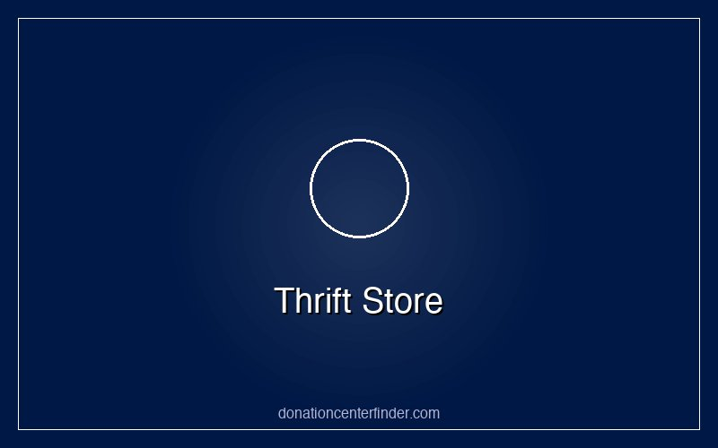

SA
Thrift Store & Donation Center
Orange, California 92866
Contact & Location
📍180 S Tustin St, Orange, CA 92866
Hours
Monday
9AM-9PM
Tuesday
9AM-9PM
Wednesday
9AM-9PM
Thursday
9AM-9PM
Friday
9AM-9PM
Saturday
9AM-9PM
Sunday
10AM-6PM
Service Type
Thrift Store & Donation Center
About This Location
Thrift Store & Donation Center is listed in our directory as a thrift store & donation center serving Orange, California. Use the contact details above to confirm current hours, donation guidelines, services, and availability before visiting.